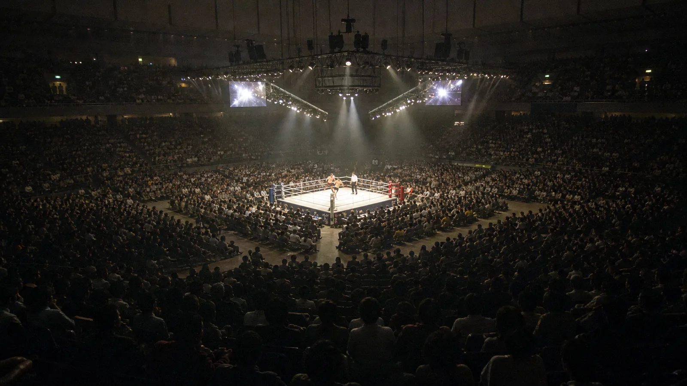
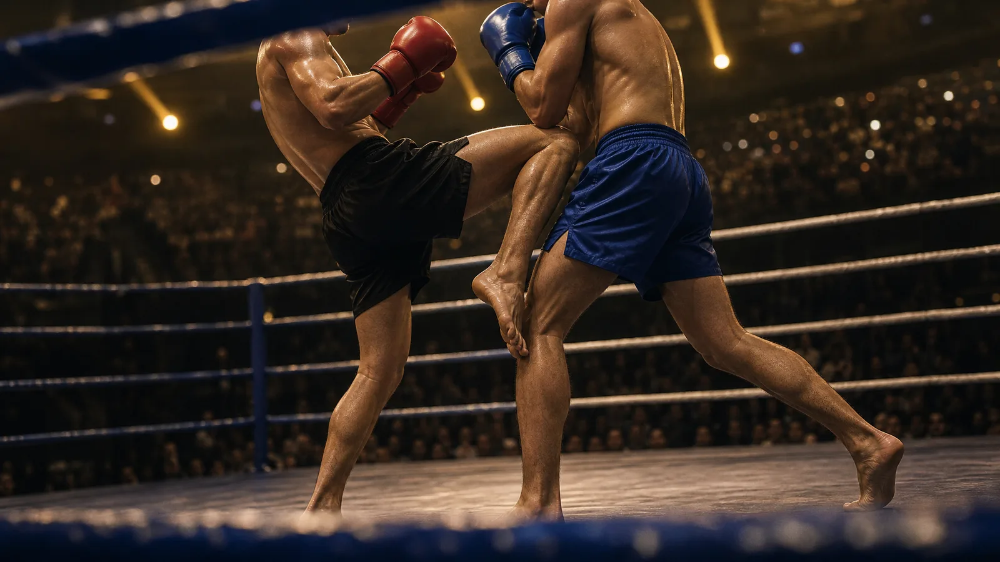

Wenn in einem deutschen Gym jemand „K1“ sagt, meint er selten die Firma aus Japan. Er meint ein Regelpaket: Kickboxen mit Low Kicks und Knie, aber ohne Ellbogen und ohne langes Klammern. Dass aus einem Markennamen die Bezeichnung für eine ganze Disziplin geworden ist, liegt an den Jahren zwischen 1993 und 2010. In dieser Zeit füllte K-1 in Japan Stadien und holte Kämpfer aus aller Welt nach Tokio.
Hier geht es um die Geschichte von K-1, um das offizielle Regelwerk und darum, was K-1 von Full Contact, Low Kick und Muay Thai trennt. Danach schauen wir, wer heute nach K-1-Regeln kämpft, von der WAKO bis zu King of Kings, das am 21. November in Freiburg gastiert, und welche deutschen Namen in der K-1-Geschichte tatsächlich auftauchen. Jede Regel haben wir im jeweiligen offiziellen Regelwerk nachgelesen; die Quellen stehen unter den Tabellen und am Ende.
Was ist K-1?
K-1 ist eine Kickbox-Promotion aus Japan und zugleich ein Regelwerk, das weit über diese Promotion hinaus verwendet wird. Gegründet hat sie 1993 der Karateka Kazuyoshi Ishii, heute betreibt sie die Firma M-1 Sports Media mit Sitz in Tokio. Laut Wikipedia galt K-1 zu seiner besten Zeit als größte Kickbox-Organisation der Welt.
Weil die Veranstaltungen so bekannt wurden, steht „K-1“ inzwischen auch für eine Art zu kämpfen. Verbände wie ISKA und WKN vergeben eigene Titel nach K-1-Regeln, die WAKO führt eine Disziplin namens „K1 Style“, und große Ligen wie GLORY und ONE Championship arbeiten mit Regelwerken, die stark an K-1 angelehnt sind. Wer von einem K-1-Kampf spricht, kann also zwei Dinge meinen: einen Kampf bei der Promotion K-1 in Japan oder einen Kampf nach diesem Regelpaket, irgendwo auf der Welt.
In deutschen Hallen ist fast immer das Zweite gemeint. Die Unterschiede zwischen den einzelnen Fassungen stecken im Detail, vor allem beim Clinch. Dazu weiter unten mehr.
Woher kommt K-1, und wofür steht das K?
K-1 kommt aus dem Karate. Kazuyoshi Ishii hatte Kyokushin-Karate trainiert und 1980 eine eigene Schule gegründet, das Seidokaikan. Mit ihr veranstaltete er Vergleichskämpfe gegen andere Stile, zuerst nach Regeln aus dem Vollkontakt-Karate, nach und nach immer näher am Kickboxen. 1993 gründete er K-1 als eigene Kickbox-Organisation, eng mit dem Seidokaikan verbunden, aber unabhängig davon.
Die Idee war einfach: Champions aus Karate, Kickboxen, Kung-Fu, Kempo, Taekwondo und Muay Thai sollten unter einem gemeinsamen Regelwerk gegeneinander antreten, damit am Ende feststeht, wer der stärkste Kämpfer im Stand ist. Die erste Veranstaltung, K-1 Sanctuary I, fand am 30. März 1993 in der Korakuen Hall in Tokio statt, vor 2.100 Zuschauern. Einen Monat später, am 30. April 1993, folgte in der Nationalsporthalle Yoyogi der erste Grand Prix: acht Kämpfer aus sieben Ländern, ein Abend, 12.000 Zuschauer. Es gewann der Kroate Branko Cikatić, der alle drei Kämpfe durch K. o. beendete und 100.000 US-Dollar Preisgeld mitnahm. Im Finale schlug er den Niederländer Ernesto Hoost, der das Turnier später viermal gewinnen sollte.
Was bedeutet das K in K-1?
Laut englischer Wikipedia steht das K offiziell für Karate, Kickboxen, Kung-Fu, Kempo und Taekwondo, die zusammen unter Kakutōgi fallen, das japanische Sammelwort für Kampfsport. Die 1 steht für den einen Sieger, die Nummer eins, und erinnert zugleich an die eine, gewichtsoffene Klasse der frühen Turniere. Die deutsche Wikipedia nennt außerdem ein Wortspiel mit der Formel 1; daher kommt auch der Name „Grand Prix“.
Was war der K-1 World Grand Prix?
Der K-1 World Grand Prix war das Turnier, mit dem K-1 berühmt wurde: acht Kämpfer, ein Abend, und wer den Titel wollte, musste dreimal hintereinander gewinnen. Anfangs lud K-1 die Teilnehmer ein. Ab 1998 kamen regionale Ausscheidungsturniere dazu, später eine Runde der letzten 16, aus der sich die acht Finalisten ergaben. Das Finale fand von 1997 bis 2006 im Tokyo Dome statt.

Die Zahlen aus dieser Zeit sind für eine Kampfsportart ohne olympischen Rückhalt ungewöhnlich. Zum Finale 2000 kamen laut Wikipedia 70.200 Zuschauer, zum Finale 2002 sogar 74.500, die höchste Zuschauerzahl, die K-1 je erreicht hat. Die Fernsehübertragung des Finales 2002 kam in Japan auf eine Einschaltquote von 28,4 %. Im selben Jahr startete K-1 die World MAX, ein eigenes Turnier für Kämpfer bis 70 kg, das neben dem gewichtsoffenen Grand Prix zur zweiten großen Bühne wurde.
Alle Sieger des K-1 World Grand Prix
| Jahr | Sieger | Land | Finalgegner |
|---|---|---|---|
| 1993 | Branko Cikatić | Kroatien | Ernesto Hoost |
| 1994 | Peter Aerts | Niederlande | Masaaki Satake |
| 1995 | Peter Aerts | Niederlande | Jérôme Le Banner |
| 1996 | Andy Hug | Schweiz | Mike Bernardo |
| 1997 | Ernesto Hoost | Niederlande | Andy Hug |
| 1998 | Peter Aerts | Niederlande | Andy Hug |
| 1999 | Ernesto Hoost | Niederlande | Mirko Filipović |
| 2000 | Ernesto Hoost | Niederlande | Ray Sefo |
| 2001 | Mark Hunt | Neuseeland | Francisco Filho |
| 2002 | Ernesto Hoost | Niederlande | Jérôme Le Banner |
| 2003 | Remy Bonjasky | Niederlande | Musashi |
| 2004 | Remy Bonjasky | Niederlande | Musashi |
| 2005 | Semmy Schilt | Niederlande | Glaube Feitosa |
| 2006 | Semmy Schilt | Niederlande | Peter Aerts |
| 2007 | Semmy Schilt | Niederlande | Peter Aerts |
| 2008 | Remy Bonjasky | Niederlande | Badr Hari |
| 2009 | Semmy Schilt | Niederlande | Badr Hari |
| 2010 | Alistair Overeem | Niederlande | Peter Aerts |
| 2024 | Ariel Machado | Brasilien | Feng Rui |
Gewichtsoffener Grand Prix, Jahre 1993 bis 2010 und 2024, wie in der Siegerliste der englischen Wikipedia geführt (K-1 World Grand Prix, abgerufen im Oktober 2026). Länder nach den dortigen Angaben. Das 2026 neu ausgetragene Turnier bis 90 kg steht weiter unten bei den deutschen Erfolgen.
Vier Namen dominieren die Liste. Ernesto Hoost und Semmy Schilt gewannen je viermal, Peter Aerts und Remy Bonjasky je dreimal. Zusammen holten die vier 14 der 19 Titel. Auch auf der anderen Seite des Finales standen oft dieselben Gesichter: Aerts verlor dreimal ein Finale, Andy Hug zweimal hintereinander gegen Niederländer.
Grand-Prix-Titel je Kämpfer, 1993 bis 2024
Zählung nach der Siegerliste in Tabelle 1. Quelle: englische Wikipedia, K-1 World Grand Prix, abgerufen im Oktober 2026.
Wer sind die bekanntesten K-1-Kämpfer?
Die Namen, die mit K-1 verbunden bleiben, sind vor allem die Grand-Prix-Sieger: Ernesto Hoost, Peter Aerts, Semmy Schilt, Remy Bonjasky und der Schweizer Andy Hug. Dazu kommen die Stars der World MAX wie Masato, Buakaw und Giorgio Petrosyan.
Ernesto Hoost
Hoost, Jahrgang 1965, stand schon beim ersten Grand Prix 1993 im Finale und verlor. Danach gewann er das Turnier 1997, 1999, 2000 und 2002. Den Spitznamen „Mr. Perfect“ bekam er für komplexe Kombinationen, die er mit fast maschineller technischer Präzision schlug. Nach dem Finale am 2. Dezember 2006 im Tokyo Dome beendete er seine Laufbahn.
Peter Aerts
Aerts, wegen seiner gefürchteten hohen Tritte „The Dutch Lumberjack“ genannt, gewann 1994, 1995 und 1998. Er war laut Wikipedia bei jedem K-1 World Grand Prix dabei außer 2009. Noch 2010 stand er mit 40 Jahren im Finale, das er gegen Alistair Overeem verlor.
Semmy Schilt
Schilt ist 2,12 m groß und kommt aus dem Ashihara-Karate. Er gewann 2005, 2006, 2007 und 2009 und ist damit der Einzige, der den Grand Prix dreimal in Folge gewonnen hat. 2012 gewann er zusätzlich das Schwergewichtsturnier von GLORY in Japan.
Remy Bonjasky
Bonjasky wurde in Paramaribo in Suriname geboren und kam mit fünf Jahren in die Niederlande. Er gewann 2003, 2004 und 2008. Den Spitznamen „The Flying Gentleman“ verdankt er vor allem seinen gesprungenen Tritten. Das Finale 2008 gewann er, nachdem sein Gegner Badr Hari disqualifiziert worden war.
Andy Hug
Der Schweizer Andy Hug ist bis heute der einzige Sieger des gewichtsoffenen Grand Prix aus dem deutschsprachigen Raum. Er kam aus dem Kyokushin-Karate, war mit rund 1,80 m für einen Schwergewichtler klein und machte das mit Tempo und Tritten wett. Am 6. Mai 1996 gewann er in Yokohama das Finale gegen Mike Bernardo durch K. o., mit einem tiefen gedrehten Fersentritt gegen das Bein, der als „Hug Tornado“ bekannt wurde. 1997 und 1998 stand er erneut im Finale. Hug starb im August 2000 mit 35 Jahren an Leukämie.
Die Stars der World MAX
Im Turnier bis 70 kg prägten andere Namen das Bild: der Niederländer Albert Kraus als erster Sieger 2002, der Japaner Masato (2003 und 2008), der Thailänder Buakaw Por. Pramuk (2004 und 2006), der Niederländer Andy Souwer (2005 und 2007) und der Italiener Giorgio Petrosyan (2009 und 2010).
Warum verlor K-1 an Bedeutung, und gibt es K-1 heute noch?
K-1 gibt es noch, aber nicht mehr als die Weltbühne der 2000er-Jahre. Heute veranstaltet K-1 vor allem in Japan, mit eigenem Unterbau aus der Nachwuchsserie Krush, Amateurturnieren und K-1-Gyms. Der Weg dorthin war holprig.
2003 wurde Gründer Ishii wegen Steuerhinterziehung festgenommen und später verurteilt. Die Geschäfte übernahm die neu gegründete Fighting and Entertainment Group, kurz FEG, unter dem Sportjournalisten Sadaharu Tanikawa. Unter der FEG lief K-1 Mitte der 2000er-Jahre weiter erfolgreich, setzte aber stärker auf Show, Fernsehen und gemischte Abende mit MMA. Gegen Ende des Jahrzehnts kamen die Probleme: weniger Geld von Fernsehsendern und Sponsoren in Japan, steigende Kampfbörsen, verspätete Zahlungen an Kämpfer. Anfang 2011 räumte die FEG finanzielle Schwierigkeiten öffentlich ein, im Juli 2011 wurde die Marke verkauft, 2012 ging die FEG in die Insolvenz.
Danach wechselte die Marke mehrfach den Besitzer, unter anderem an die K-1 Global Holdings in Hongkong. Die Bühne verschob sich: 2012 kaufte Glory Sports International die niederländische Promotion It's Showtime, die in der neuen Liga GLORY aufging. In Japan begann 2014 ein Neustart. Die „K-1 World League“, geplant und produziert von M-1 Sports Media, nannte sich im September 2014 in K-1 World GP um. Am 28. Februar 2023 erwarb M-1 Sports Media die weltweiten Lizenzrechte an der Marke K-1.
Seit 2024 gibt es auch die großen Turniere wieder. Den World Grand Prix 2024 gewann der Brasilianer Ariel Machado, die World MAX 2024 der Bulgare Stoyan Koprivlenski und die World MAX 2025 der Brasilianer Jonas Salsicha. 2026 kamen ein Weltturnier bis 90 kg und laut Wikipedia-Eventliste Abende unter dem Namen K-1 in Europa, Australien und Brasilien dazu. Außerhalb Japans laufen die Veranstaltungen seit 2025 hauptsächlich über die Pay-per-View-Plattform ABEMA Live; ganze Kämpfe lädt K-1 regelmäßig auf seinen YouTube-Kanal hoch.
K-1 von 1980 bis 2026 auf einen Blick
Schematisch, Abstände nicht maßstäblich. Quellen: englische Wikipedia (K-1, Liste der K-1-Events), Tokyo Sports vom 08.02.2026 zum Turnier bis 90 kg.
Welche Regeln gelten im K-1?
Im K-1 sind Schläge, Tritte und Knie erlaubt, Ellbogen, Würfe und jedes Festhalten verboten. Das offizielle Regelwerk der K-1 aus Japan wurde am 3. November 2014 beschlossen, die aktuelle Fassung gilt seit dem 12. März 2023. Die wichtigsten Punkte im Überblick.
Wie lange dauert ein K-1-Kampf?
Gekämpft wird im Ring, mindestens sechs mal sechs Meter groß, mit mindestens drei Seilen. Ein Kampf dauert drei Runden à drei Minuten mit einer Minute Pause. Steht es danach unentschieden, folgt eine Extrarunde von drei Minuten, nach der die Punktrichter auch bei kleinstem Unterschied einen Sieger bestimmen müssen. Für Frauen mit wenig Kampferfahrung sind drei Runden à zwei Minuten vorgesehen. Im Turnier gilt dasselbe Format; zum Schutz der Kämpfer darf niemand an einem Tag mehr als 15 Runden bestreiten. Die Handschuhe richten sich nach dem Gewicht: 6 Unzen unter 55 kg, 8 Unzen bis unter 75 kg, 10 Unzen ab 75 kg.
Was ist im K-1 erlaubt?
Bei den Schlägen sind Gerade, Haken, Aufwärtshaken und der gedrehte Rückhandschlag erlaubt, im Regelwerk „Backspin Blow“ genannt. Bei den Tritten listet das Regelwerk Frontkick, Low Kick, Middle Kick, High Kick, Sidekick, Backkick, Tritte gegen die Innenseite des Oberschenkels und gesprungene Tritte. Dazu kommt der Kniestoß. Wichtig ist, womit du triffst: Kommt der Treffer nicht mit der Schlagfläche des Handschuhs, sondern nur mit Unterarm, Ellbogen oder Handgelenk, ist das ein Foul.

Was ist im K-1 verboten?
Verboten sind Kopfstöße, Ellbogen, Würfe und Hebel aus Ringen oder Judo, Tiefschläge, Angriffe auf einen am Boden liegenden Gegner und Schläge auf den Hinterkopf. Und, für viele überraschend, jede Form des Festhaltens. Das Regelwerk nennt ausdrücklich das Fangen des tretenden Beins, das Klammern und den Nackenclinch aus dem Muay Thai. Wer immer wieder klammert, um Angriffen auszuweichen, wird ermahnt, verwarnt und bekommt Punktabzug.
Daraus ergibt sich ein Detail, das oft falsch wiedergegeben wird. Auch in der englischen Wikipedia steht, im K-1 sei der Clinch fünf Sekunden lang erlaubt. Im offiziellen Regelwerk der K-1 aus Japan steht das nicht. Die Fünf-Sekunden-Regel stammt aus dem Amateur-Regelwerk der WAKO, und auch dort fällt sie Anfang 2027 weg.
Wie wird im K-1 gewertet?
Drei Punktrichter werten nach dem Zehn-Punkte-System, und zwar in dieser Reihenfolge: Zahl der Niederschläge, Schaden beim Gegner, Zahl der sauberen Treffer, Aggressivität. Ein Niederschlag kostet in der Regel zwei Punkte (10:8), ein zweiter in derselben Runde drei (10:7). Drei Niederschläge in einer Runde beenden den Kampf, im Turnier schon zwei, außer im Finale. Wer nach einem Niederschlag nicht innerhalb von neun Sekunden kampfbereit steht, verliert durch K. o. Fouls kosten außerdem Geld: Bei einem Punktabzug behält K-1 laut Regelwerk 20 % der Börse ein, bei zwei Abzügen 30 %, bei einer Disqualifikation alles.
Was unterscheidet K-1 von Kickboxen, Low Kick und Full Contact?
K-1 ist eine Form des Kickboxens. „Kickboxen“ ist der Oberbegriff, unter dem es mehrere Regelwerke gibt. Im Amateurbereich unterscheidet die WAKO im Ring drei Disziplinen, die sich vor allem darin unterscheiden, welche Ziele und welche Techniken erlaubt sind:
- Full Contact: Treffer nur oberhalb der Gürtellinie. Tritte gegen die Beine sind verboten, Knie ebenfalls. Gekämpft wird in langen Hosen mit Fußschützern. Eine Eigenheit: Jeder Kämpfer muss pro Runde mindestens sechs Tritte zeigen, sonst gibt es Punktabzug.
- Low Kick: wie Full Contact, dazu Tritte gegen den Oberschenkel, von außen, von innen und von hinten. Unterhalb des Knies darf nicht getreten werden, Knie bleiben verboten.
- K1 Style: Tritte gegen das ganze Bein, Knie gegen Beine, Körper und Kopf, dazu der gedrehte Rückhandschlag. Gerade Tritte und Knie gegen die Vorderseite von Oberschenkel, Knie und Schienbein bleiben verboten. Das ist die WAKO-Fassung der K-1-Regeln.
Im Training merkst du den Unterschied sofort. Wer aus dem Full Contact kommt, muss im Low Kick lernen, das vordere Bein zu schützen. Wer vom Low Kick zum K1 Style wechselt, bekommt mit dem Knie eine Waffe für die Halbdistanz dazu, und mit den Tritten unter das Knie ein neues Ziel.
Welche Techniken sind wo erlaubt?
Quellen: K-1 WORLD GP Official Rule (in Kraft seit 12.03.2023); WAKO Rules (Version 2 vom 04.05.2022), Kapitel 8 bis 10; WAKO-Vorstandsbeschlüsse vom 20.03.2026; IFMA Rules & Regulations (revidiert am 11.05.2026). Im WAKO Low Kick sind Tritte nur gegen den Oberschenkel zwischen Hüfte und Knie erlaubt. Stand: Oktober 2026.
K-1, die drei WAKO-Ringdisziplinen und Muay Thai
| Punkt | K-1 (Japan) | WAKO K1 Style | WAKO Low Kick | WAKO Full Contact | Muay Thai (IFMA) |
|---|---|---|---|---|---|
| Runden | 3 × 3 Min., bei Gleichstand Extrarunde | 3 × 2 Min. | 3 × 2 Min. | 3 × 2 Min. | 3 × 3 Min. (Elite) |
| Kopfschutz | nicht vorgesehen | Pflicht | Pflicht | Pflicht | Pflicht |
| Handschuhe | 6, 8 oder 10 Unzen je nach Gewicht | 10 Unzen | 10 Unzen | 10 Unzen | 10 Unzen |
| Weiterer Schutz | Tiefschutz, Mundschutz | Schienbeinschoner | Schienbeinschoner | Schienbeinschoner, Fußschützer, lange Hose | Schienbein- und Ellbogenschützer |
| Wertung | Niederschläge, Schaden, saubere Treffer, Aggressivität | jede saubere Technik ein Punkt | jede saubere Technik ein Punkt | jede saubere Technik ein Punkt | Zahl der Wertungstechniken, dann Wucht |
| Besonderheit | kein Festhalten, Börsenabzug bei Fouls | Clinch max. 5 Sek., ab 2027 verboten | keine Tritte unter das Knie | mindestens 6 Tritte pro Runde | Ellbogen und Clinch erlaubt |
WAKO-Angaben für Senioren in allen Ringdisziplinen. IFMA: Elite-Klasse, Kopf-, Schienbein- und Ellbogenschutz laut Regel 15.3 Pflicht. K-1: Pflichtausrüstung laut Artikel 2 des Regelwerks sind Handschuhe, Tiefschutz und Mundschutz. Quellen wie unter der Infografik. Stand: Oktober 2026.
Was unterscheidet K-1 von Muay Thai?
Vor allem Ellbogen und Clinch. Im Muay Thai sind beide erlaubt und gehören zum Kern des Sports, im K-1 sind beide verboten.
Nach dem Regelwerk der IFMA zählen im Muay Thai Schläge, Tritte, Knie und Ellbogen als Wertungstechniken, und fast der ganze Körper ist Trefferfläche, ausgenommen Leiste und Nacken. Im Clinch darf gearbeitet werden, bis der Ringrichter mit „Yaek“ trennt. Ein gefangenes Bein darf man halten, solange man den Gegner nicht mehr als zwei Schritte schiebt, ohne zu treffen. Im K-1 ist all das ein Foul.
Für den Kampf heißt das: Im K-1 spielt sich fast alles auf Distanz und Halbdistanz ab, Knie kommen aus dem Schritt oder gegen den Gegner, der nach vorn drückt. Im Muay Thai ist die Nahdistanz ein eigener Kampfraum mit eigenen Techniken. Dazu kommt, dass im K-1 der Clinch als Verschnaufpause wegfällt. Welche der beiden Sportarten besser zu dir passt, haben wir in Muay Thai vs. Kickboxen: Welcher Kampfsport passt? aufgeschrieben.
Wie kämpfen WAKO, ISKA, GLORY und KOK nach K-1-Regeln?
Alle vier erlauben Knie und verbieten Ellbogen. Die Unterschiede liegen beim Clinch, beim Fangen des Beins, bei den Fußfegern und im Format.
WAKO: K1 Style
Bei der WAKO heißt die Disziplin „K1 Style“. Nach dem aktuellen Regelwerk, Version 2 vom 4. Mai 2022, wird drei Runden à zwei Minuten gekämpft, mit Kopfschutz, 10-Unzen-Handschuhen und Schienbeinschonern. Erlaubt ist ein aktiver Clinch von höchstens fünf Sekunden, um ein Knie zu setzen, und zwar nur ein Knie pro Griff an Nacken oder Schultern. Fußfeger in Knöchelhöhe sind erlaubt, das Bein des Gegners zu fangen ist verboten, auch für einen kurzen Moment.
Am 20. März 2026 hat der WAKO-Vorstand eine Änderung beschlossen, die ab dem 1. Januar 2027 gilt: Clinchen, Halten und Greifen sind im K1 Style dann nicht mehr erlaubt, dafür fällt die Begrenzung der Zahl der Knietechniken weg. Damit rückt die WAKO näher an das Original aus Japan.
ISKA: K-1 für Amateure
Die ISKA führt K-1 als eigene Disziplin. Ihr Amateur-Regelwerk für Ringsportarten vom Januar 2025 beschreibt sie ausdrücklich als „für Amateure angepasst“: Kopfschutz und 10-Unzen-Handschuhe sind Pflicht, Low Kicks sind über und unter dem Knie erlaubt, Knie aber nur zum Körper und zu den Beinen, nicht zum Kopf. Clinchen, um ein Knie zu setzen, ist verboten, ebenso Fußfeger, Würfe und der gedrehte Rückhandschlag. Gewertet wird in derselben Reihenfolge wie im japanischen Original: Niederschläge, Schaden, saubere Treffer, Aggressivität.
GLORY
GLORY nennt sein Regelwerk nicht K-1, folgt aber demselben Grundmuster. Laut Regelwerk 2026 geht ein Kampf über drei Runden à drei Minuten, ein Titelkampf über fünf. Knie sind erlaubt, auch gegen die Beine. Den Clinch erlaubt GLORY nur für einen einzigen, sofortigen Kniestoß, danach muss gelöst werden. Ein gefangenes Bein darf man für genau einen Treffer halten und dabei höchstens einen Schritt machen. Gegen die Beine sind nur bogenförmige Tritte erlaubt, also Low Kick und Hakentritt, keine geraden Stoßtritte. Fußfeger und Würfe sind verboten. Was GLORY grundsätzlich von MMA trennt, steht in GLORY vs. UFC: der echte Unterschied. Nach diesen Regeln hat auch Chris Wunn aus Bruchsal bei GLORY gekämpft.
KOK
Die Serie King of Kings kämpft nach eigenen Regeln, die dem K-1 sehr nahe kommen: drei Runden à drei Minuten, Titelkämpfe über fünf, Schläge, Tritte und Knie erlaubt, Ellbogen und Würfe verboten, technischer K. o. nach drei Niederschlägen in einer Runde oder vier im Kampf. Eine eigene Clinch-Regel veröffentlicht KOK nicht. Auffällig ist die Wertung: Nach Niederschlägen und Schaden zählen saubere Treffer mit spektakulären, also gedrehten und gesprungenen Techniken mehr als normale Treffer. Ähnlich gewichtet auch GLORY. Herkunft, Titel und Kämpfer der Liga findest du in King of Kings (KOK) erklärt.
K-1, GLORY, KOK und WAKO K1 Style im Detail
| Punkt | K-1 (Japan) | GLORY | KOK | WAKO K1 Style |
|---|---|---|---|---|
| Standardkampf | 3 × 3 Min. plus Extrarunde | 3 × 3 Min. | 3 × 3 Min. | 3 × 2 Min. |
| Titelkampf | 3 × 3 Min. plus Extrarunde | 5 × 3 Min. | 5 × 3 Min. | entfällt (Amateurregeln) |
| Knie | erlaubt | erlaubt, auch gegen die Beine | erlaubt | erlaubt, auch zum Kopf |
| Clinch | Foul | nur für einen sofortigen Kniestoß | im Regelwerk nicht geregelt | max. 5 Sek. für ein Knie; ab 2027 verboten |
| Bein fangen | Foul | für einen Treffer, höchstens ein Schritt | im Regelwerk nicht geregelt | verboten |
| Fußfeger | nicht unter den erlaubten Techniken | verboten | nicht geregelt (Würfe verboten) | in Knöchelhöhe erlaubt |
| Technischer K. o. | 3 Niederschläge in einer Runde (Turnier: 2, außer Finale) | 3 in einer Runde oder 4 im Kampf | 3 in einer Runde oder 4 im Kampf | 3 im Kampf |
| Wertung zuerst | Niederschläge, dann Schaden | Niederschläge, dann Schaden („High Impact Damage“) | Niederschläge, dann Schaden, dann spektakuläre Treffer | Zahl der sauberen Techniken |
Quellen: K-1 WORLD GP Official Rule; GLORY Rules 2026 v2 (Abschnitte 5.06 bis 5.08 und Anhang 4, verlinkt auf glorykickboxing.com/rules); KOK International Rules; WAKO Rules 2022, Kapitel 7 und 10, und Vorstandsbeschlüsse vom 20.03.2026. „Nicht geregelt“ heißt: Das veröffentlichte Regelwerk sagt dazu nichts. Stand: Oktober 2026.
Wo kannst du Kämpfe nach K-1-Regeln live sehen?
Ganz in der Nähe: Am Samstag, 21. November 2026, gastiert King of Kings mit KOK 130 in der SICK-ARENA der Messe Freiburg. Gekämpft wird nach den KOK-Regeln aus dem Abschnitt oben, also mit Knie und ohne Ellbogen.
Die K-1 selbst kannst du außerhalb Japans über ABEMA Live per Pay-per-View sehen. Ob ein Event in Deutschland freigeschaltet ist, prüfst du am besten vor dem Kauf. Ganze Kämpfe stellt K-1 außerdem auf seinen offiziellen YouTube-Kanal.
Gibt es deutsche K-1-Weltmeister?
Ja, aber es lohnt sich, genau hinzusehen, welcher Titel gemeint ist. „K-1-Weltmeister“ kann dreierlei bedeuten: Sieger eines großen K-1-Turniers in Japan, Inhaber eines Gürtels der Promotion K-1 oder Weltmeister eines anderen Verbands in der Disziplin K-1.
Lukas Achterberg
Der jüngste deutsche Turniersieg bei der K-1 selbst: Lukas Achterberg aus Aachen, Jahrgang 1996 und 2,00 m groß, gewann am 8. Februar 2026 in Tokio das K-1-Weltturnier bis 90 kg. Er siegte an einem Abend dreimal in der ersten Runde, im Viertelfinale gegen Mahmoud Sattari aus dem Iran nach 51 Sekunden, im Halbfinale gegen den Rumänen Bogdan Stoica und im Finale gegen den Russen Nikita Kozlov, laut Tokyo Sports nach einem harten Tritt gegen die Wade. Ein Kampf um den K-1-Gürtel bis 90 kg war für Juli 2026 angesetzt, kam aber wegen einer Verletzung nicht zustande.
Enriko Kehl
Enriko Kehl, Jahrgang 1992, gewann 2014 die K-1 World MAX, das Turnier bis 70 kg, damals unter der Marke K-1 Global. Den Titel erhielt er am 12. Oktober 2014 in Pattaya kampflos, weil sein Finalgegner Buakaw Banchamek nicht antrat. Kehl wurde 2012, 2013 und 2014 zum deutschen Kickboxer des Jahres gewählt und kämpfte später unter anderem bei ONE Championship und GLORY.
Stefan Leko und Chalid Arrab
Beim großen Finalturnier der FEG-Jahre kam kein Deutscher ganz nach oben. Am nächsten dran war Stefan Leko, in Deutschland geboren und bei Mostar aufgewachsen: Er erreichte 2001 im World Grand Prix den dritten Platz und gewann zwei Qualifikationsturniere in Las Vegas, 2001 und 2006. In dieser Zeit schlug er auch Peter Aerts durch K. o. Auch Chalid Arrab gewann 2006 ein K-1-Qualifikationsturnier in Las Vegas.
Weltmeister anderer Verbände nach K-1-Regeln
Daneben vergeben Verbände wie ISKA, WKN oder WKU eigene Weltmeistertitel nach K-1-Regeln. Mario Kornhass zum Beispiel, für KOK 130 in Freiburg angekündigt, ist laut KOK WKU-Weltmeister nach K1-Regeln. Auch unter unseren Trainern gibt es einen solchen Titel: Mohsen ist K-1-Weltmeister der ISKA.
Was wir in der Halle beobachten
Unsere Trainer stehen seit 2006 in der Halle, jeden Monat trainieren über 1.500 Menschen offline mit ihnen. Was folgt, sind Beobachtungen aus dieser Praxis, keine Studienergebnisse:
- „K1“ heißt in der Halle fast immer „Kickboxen mit Knie“. Nach der Liga aus Japan fragt beim Probetraining kaum jemand, nach Low Kicks und Knien dagegen oft.
- Das Knie ohne Griff ist schwerer, als es aussieht. Wer vom Muay Thai kommt, greift fast automatisch nach dem Nacken. Unter K-1-nahen Regeln muss das Knie aus dem Schritt kommen, oft als Antwort auf einen Gegner, der nach vorn marschiert.
- Low Kicks verändern das Sparring sofort. Wer nur Full Contact kennt, steht oft mit viel Gewicht auf dem vorderen Bein und lernt erst nach ein paar Treffern am Oberschenkel, das Bein rechtzeitig anzuheben.
- Für Hobbysportler sind die Unterschiede kleiner als im Wettkampf. Gerade, Haken, Low Kick, Knie und ein Gefühl für Distanz brauchst du in jedem dieser Regelwerke. Was sich unterscheidet, lernst du in ein paar Einheiten.
Das Wichtigste in vier Sätzen
K-1 ist eine 1993 von Kazuyoshi Ishii gegründete Kickbox-Promotion aus Japan und zugleich der Name eines Regelwerks mit Schlägen, Tritten, Low Kicks und Knien, aber ohne Ellbogen, Würfe und Festhalten. Mit dem World Grand Prix füllte K-1 bis 2006 den Tokyo Dome, Ernesto Hoost und Semmy Schilt gewannen ihn je viermal, der Schweizer Andy Hug als bislang einziger Sieger aus dem deutschsprachigen Raum einmal. Nach der Insolvenz der FEG 2012 kämpft K-1 heute vor allem in Japan, während WAKO, ISKA, GLORY und KOK eigene, K-1-nahe Regelwerke nutzen, die sich vor allem beim Clinch unterscheiden. Aus Deutschland gewann zuletzt Lukas Achterberg im Februar 2026 ein K-1-Weltturnier, und live erleben kannst du K-1-nahe Regeln am 21. November bei KOK 130 in Freiburg.